One shared system, five diverging flows: onboarding for a platform where doctors, patients, and lawyers all need to feel at home
I had to design signup and intake for all five of them without forking the design system.
One platform, five front doors
HelpAfterAccident.com connects people injured in accidents with verified doctors and lawyers nearby, and gives those professionals a steady stream of matched patient leads.
The product only works if both sides of the marketplace show up. A doctor abandoning signup at step 6 isn't a lost user; it's a hole in the supply that patients feel. My internship project at GoMAXPAIN was to design the onboarding experience for every user type the platform serves:
Each persona needed a flow that felt personal. Underneath, the system had to stay shared (same auth pattern, same components, same visual language) so engineering could build once and branch.
My role: design intern, working under a senior product designer who set the strategy and reviewed every round. I executed the flows myself, wireframes through high-fidelity states, and owned the screen-level decisions. Every checkpoint meant presenting the work and defending it in critique.
Professionals don't finish long signups
Doctors and lawyers are hard to onboard. They're busy, they're skeptical, and we were asking for a lot: credentials, practice details, clinic hours, team members, payment preferences. Long professional signups bleed users at every screen.
The brief broke into three questions:
How short can "complete" feel?
A practice profile needs about ten pieces of information no matter what. We couldn't cut them, so they had to feel light.
How do five personas share one system?
A doctor sets clinic hours; a lawyer doesn't. Flows had to diverge after a shared trunk without forking the design system.
How do patients in crisis get through intake?
Patients arrive right after an accident, often hurt and rattled. Intake had to flex to whatever they could manage.
Four checkpoints, concept to handoff
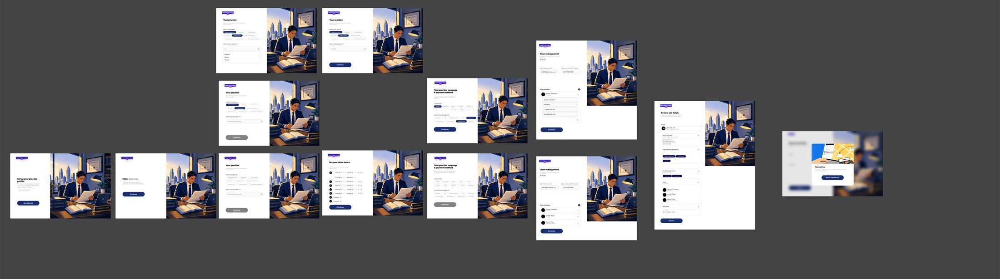
The design calls that shaped the flow
1 · One question per screen, momentum over density
Rather than cram the practice profile into three dense forms, I split it into single-purpose screens ("What's your name?", "Where is your practice?", "Set your clinic hours"), each with one CTA. A "Take 2 minutes or less" promise up front sets the contract. The headlines also talk back: once Jane picks Doctor, the next screen greets her with "Hello, Dr. Jane." Small thing, but it makes ten questions feel like a conversation instead of a form.
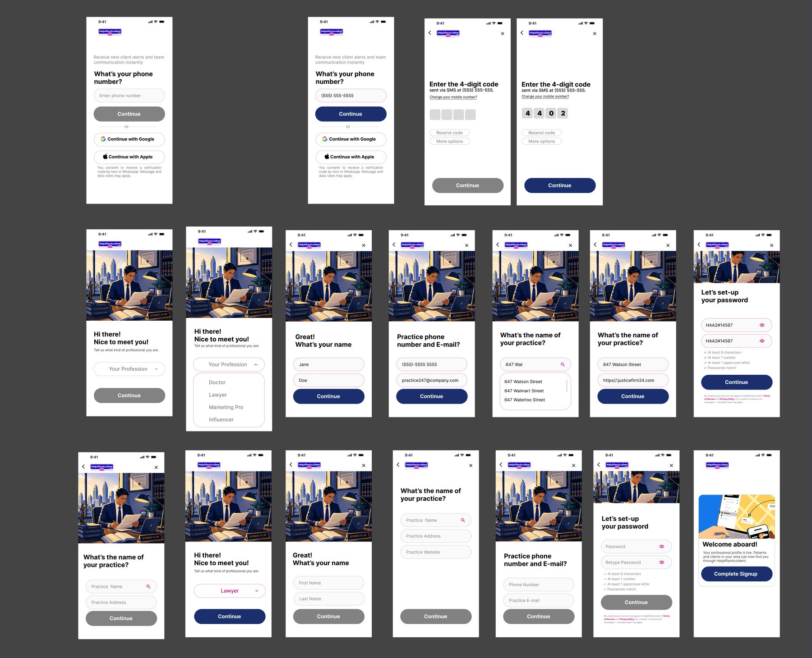
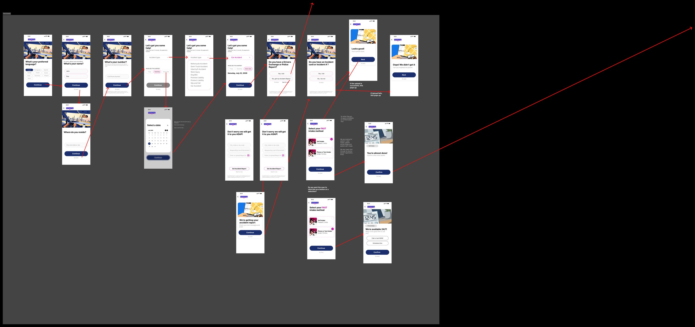
2 · Clinic hours: the iteration I'm proudest of
My first clinic-hours screen used a dropdown row per day. It worked, but it was cramped and fiddly on a phone. In critique my senior asked a simple question: how many clinics actually keep different hours every day? Almost none. The revised pattern uses tappable day chips, Mon to Fri pre-selected, with one opens/closes control. The common case now takes two taps. The odd schedule still works.
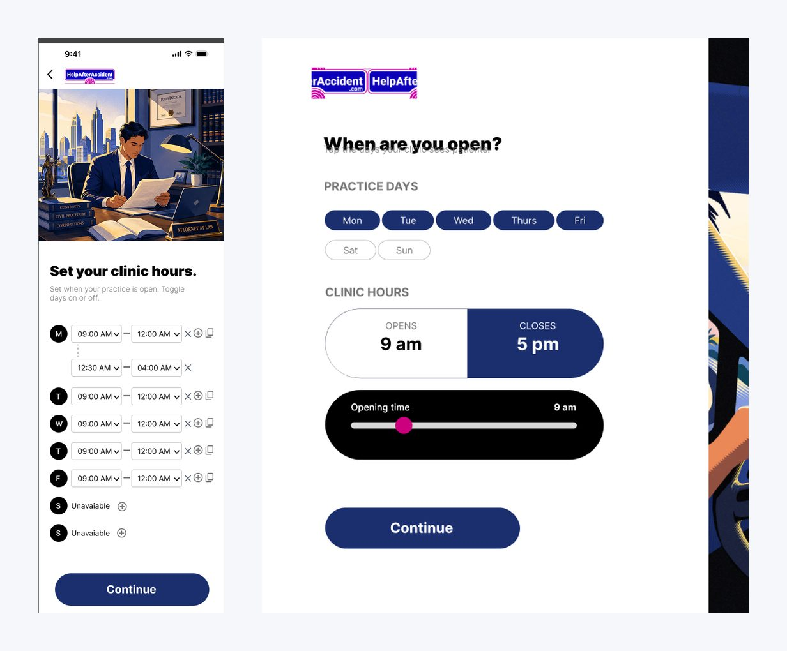
3 · Patient intake that flexes to capacity
Someone who was just in a car accident might manage a form. They might only manage a phone call. So instead of one intake flow there are four: one-click intake, self intake, digital intake with guided instructions, and phone intake run by a specialist, where the patient's only job is to pick up. The platform routes people by what they can handle that day.
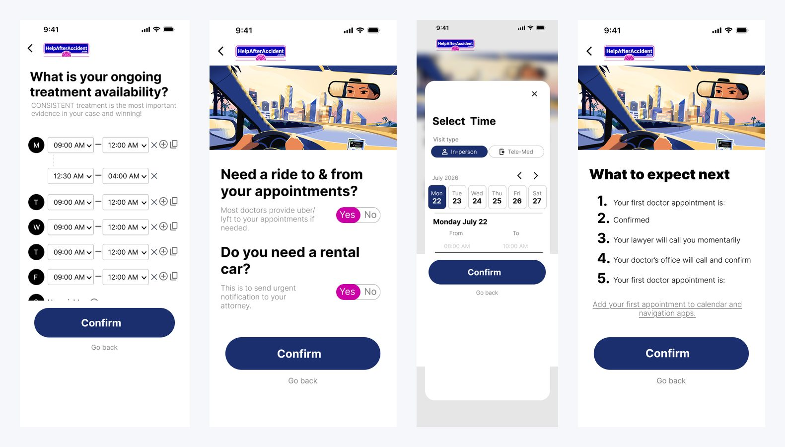
The full working file for each model, exported straight from Figma. Click any canvas to zoom in.
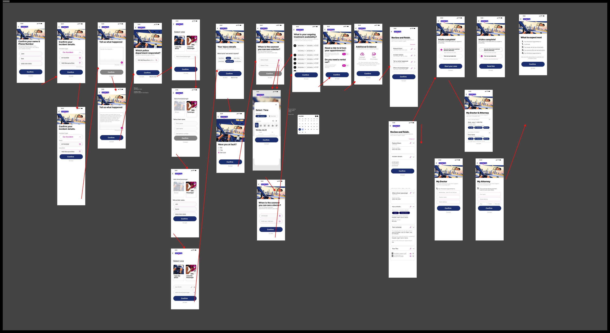
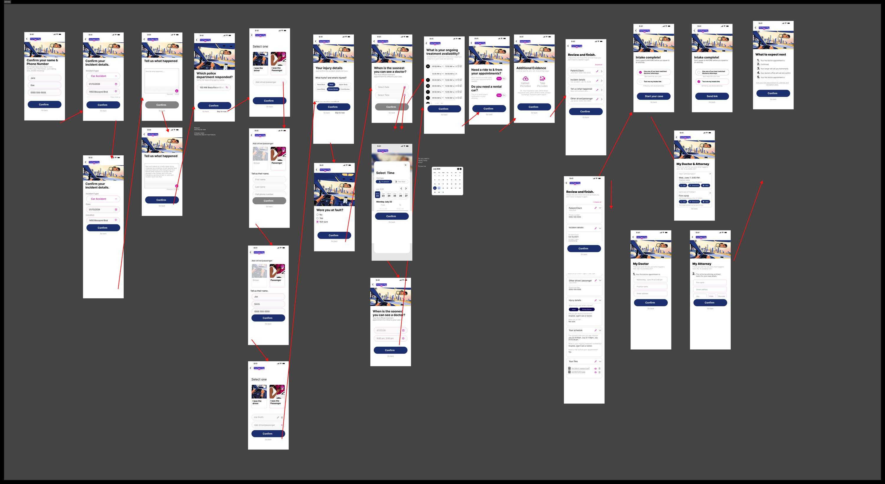
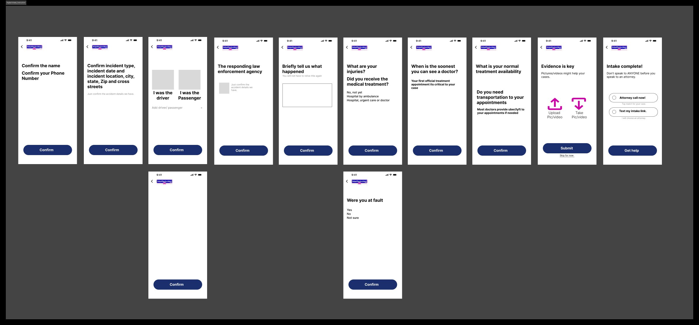
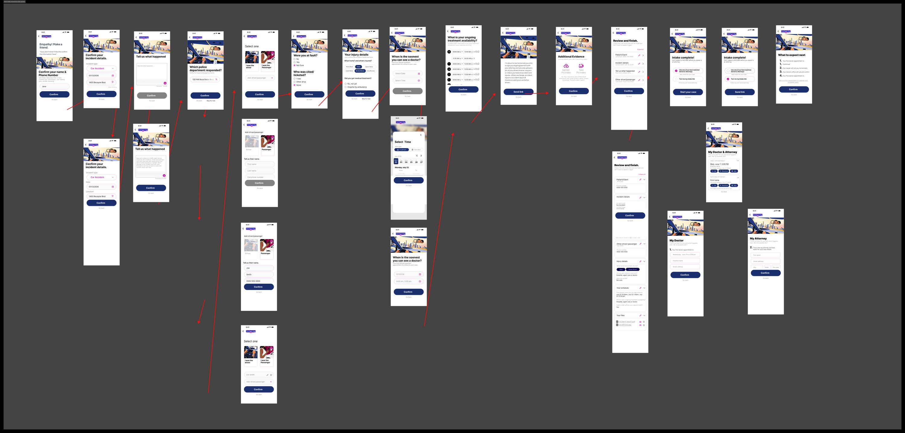
4 · Trust signals where skepticism peaks
Skepticism peaks at three moments. The first screen answers it with "Connect with over 5,000+ verified lawyers and doctors nationwide." Password creation answers it with rule checkmarks that tick live as you type. And before going live, a full "Review and finish" summary lets you edit any section. The final screen reads "You're live. Patients and clients in your area can now find you." Signup ends on a payoff rather than a dead end.
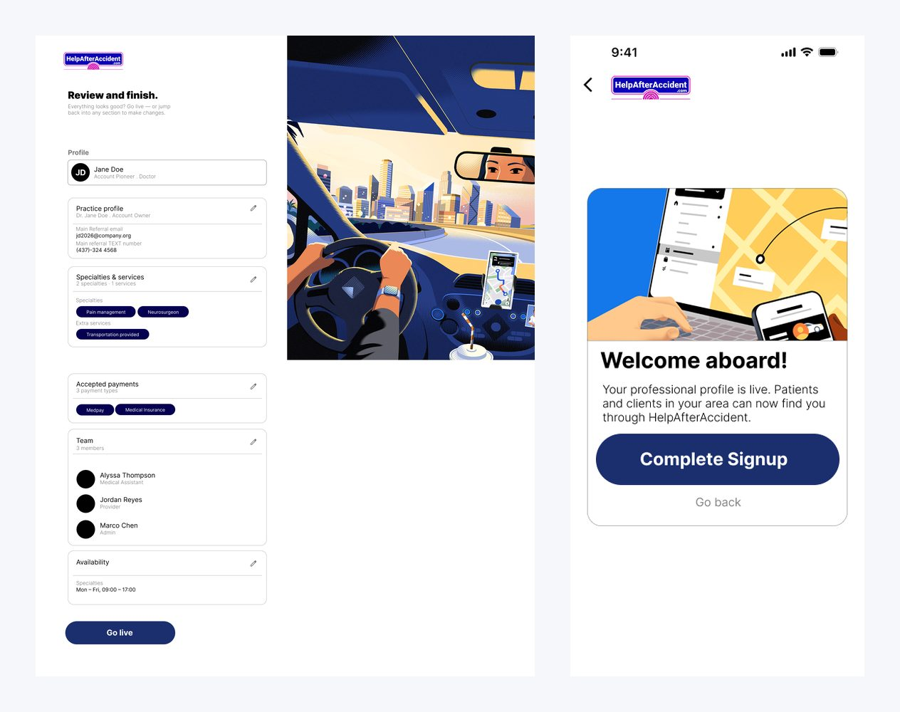
5 · Desktop gets the same care
Professionals often sign up from the front-desk computer, so every mobile step has a laptop counterpart. The split layout keeps the brand illustration on the left and a focused form column on the right, and the two platforms read as one product.
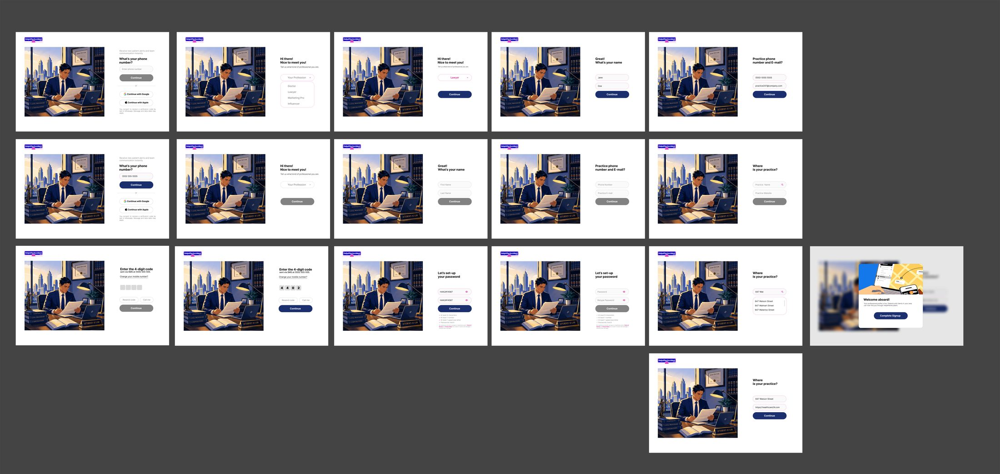
High-Fidelity Prototype
Patient onboarding: try it live
Walk through the same screens a patient encounters from first landing to confirmation. Every interaction is real: profession selection, incident type, appointment context, and trust validation, all in one seamless session.
Components & Variables
Variables and elements
Every element in the onboarding flow draws from a single shared library. The profession and incident-type selectors, button variants, and binary toggles all use the same token set, which is what made it possible to support five distinct professional roles without duplicating design work.

Approved for production
- Complete onboarding for 5 personas across mobile and desktop: 100+ screens with empty, filled, and disabled states.
- Designed 4 patient intake models that gave the business a way to route patients by capacity.
- Set the onboarding visual language (navy and pink palette, conversational tone, illustrated layouts) that the later persona flows adopted.
- My senior designer and the GoMAXPAIN team approved the work for the HelpAfterAccident.com build.
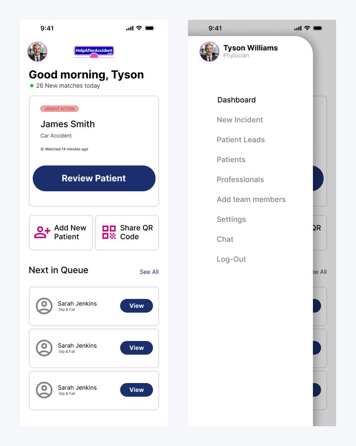
What this project taught me: how to ship a coherent system at speed, and when to defend a decision in critique versus when to let it go.
From the written evaluation my senior designer gave at the end of the internship:
From my internship performance review
"Noibedya operates far beyond the typical baseline expected of an intern. Their workflow is characterized by professional rigor, technical compliance, and a strong eye for visual balance."
On systems thinking
"They don't just place pretty buttons; they analyze the structural dependencies of a workflow. They map out the why behind a layout before executing the what."
On designing for stressed users
"Instead of overwhelming a high-stress user base with walls of inputs, Noibedya utilized a progressive disclosure model... lowering cognitive load and preventing user dropout."
On developer handoff
"By structuring high-fidelity interactive flows complete with edge cases, empty states, and dynamic form validations, they minimized engineering friction and accelerated the development sprint cycles."
On autonomy
"They routinely anticipated edge-cases in the registration and intake funnels, presenting alternative flow layouts to management before bottlenecks could arise."
Senior Product Designer, GoMAXPAIN · internship performance evaluation
What shipped
The flows went into the production build during the internship, on a platform marketed as connecting patients with 5,000+ verified professionals. The onboarding was designed to complete in under 2 minutes; I validated pacing in prototype walkthroughs but don't have post-launch analytics.
The patient intake model I landed on after testing 4 versions is the one that went into the build. I don’t have post-launch analytics yet, but the single-task-per-screen layout was a deliberate decision to reduce abandonment for users filling this out right after an accident.
What I'd do differently
Looking back at the file now, the pace left real debt. Naming it is part of the lesson:
Tokens-first, from day one
I kept shared element sheets as the source of truth. Next time I'd formalize them into Figma variables and component sets before screen production starts; that would have caught the small state drifts before critique did.
WCAG as a constraint, not an afterthought
Some pink-on-white and grey disabled states need a WCAG contrast pass, and several touch targets run small. Contrast ratios and minimum touch targets should be defined at the component level on day one, not caught in a self-audit afterwards. Cheap to fix before components are built. Expensive after.
Add progress indication
The one-question-per-screen pattern needs a stepper so users know how far is left. It's the first thing I'd test.
Archive with discipline
Rejected iterations lived next to live work. A clean archive page with a changelog would have made the file self-explanatory for engineers.
That self-audit habit, reviewing my own file the way a design lead would, is now how I close every project.